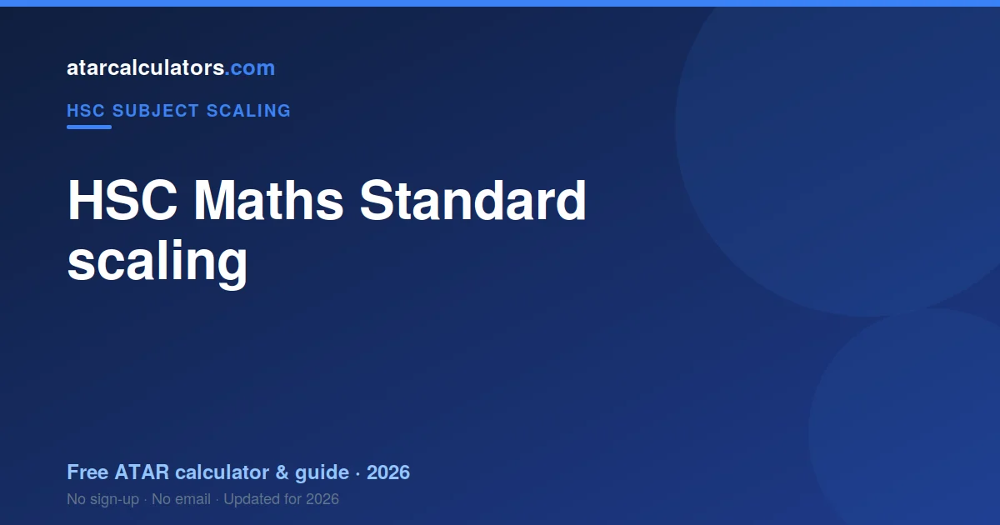
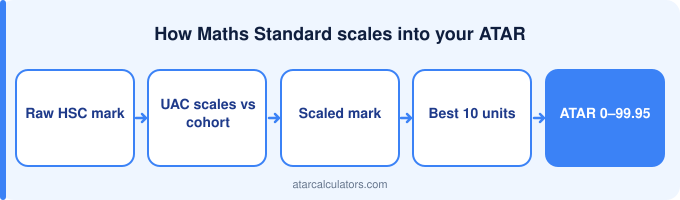

HSC Maths Standard tends to scale below average, because it has a large, broad cohort taking a more applied course, so its scaling sits lower than the harder maths courses like Advanced and the Extensions. Your Maths Standard mark is scaled by UAC against the cohort and combined into your aggregate, which is ranked into your ATAR. Scaling acts on your rank within the subject, so the surest way to a strong scaled mark is to rank as high as you can. The exact scaled mean changes each year, so check UAC’s scaling report.
Key takeaways
- Maths Standard tends to scale below average.
- Its large, broad cohort shapes its scaling.
- Scaling acts on your rank within the subject.
- The scaled mean varies yearly — check UAC.
- A Band 6 is an HSC mark of 90-100.
- Choose it for fit, not just scaling.

How HSC scaling works
UAC scales each subject against its own cohort. Mathematics Standard has one of the largest and broadest cohorts in the HSC, which is the single fact that explains its scaling.
Does HSC Maths Standard scale up or down?
HSC Maths Standard tends to scale below average, because it has a large, broad cohort taking a more applied course, so its scaling sits lower than the harder maths courses. Scaling reflects how strong the students taking a subject are across all their subjects, not how hard the subject feels.
So Maths Standard scales below average on average, but this is a tendency, not a fixed rule. The exact scaling changes from year to year with the cohort, so treat any general statement as a guide and check the current figures. See best scaling subjects in NSW.
Why it scales this way
Mathematics Standard scales lower because its cohort is wide. It includes students taking their final compulsory-feeling maths alongside students who chose it deliberately — and UAC averages the lot.
The scaled mean
Standard's scaled mean moves with its cohort each year, and UAC publishes it. Its size makes the figure relatively stable.
Scaling acts on your rank
Scaling moves the Standard cohort as a block, and your rank inside it is yours. In a cohort this large, a top rank is a genuinely strong achievement.
What ATAR does a Band 6 in Maths Standard give?
A Band 6 in Mathematics Standard does not produce a set ATAR. It contributes 2 units of a lower-scaling mark to your best 10 — worth having, and not decisive on its own.
How your mark becomes an ATAR
Step by step: your Maths Standard exam mark is aligned to a band, and averaged with your moderated school assessment mark to give your HSC mark. UAC then scales that performance against the cohort, producing a scaled mark. Your best scaled marks are added into an aggregate, which is ranked into your ATAR.
So there are several steps between your exam and your ATAR, and scaling is one of them. This is why your ATAR is not simply your average HSC mark: the scaling and ranking in between are what turn subject marks into a single rank.
Should you choose Maths Standard for scaling?
Do not jump to Advanced purely for scaling. A Band 6 in Standard scales to more than a Band 4 in Advanced, and Advanced covers considerably more ground.
Lifting your scaled mark
Lifting your scaled Standard mark means lifting your rank, which here means reading the applied questions accurately. Most lost marks in Standard are comprehension, not maths.
Estimate your Maths Standard scaling
To see roughly how your Maths Standard mark scales, use our HSC Maths Standard scaling calculator. It gives an indication of how a given mark scales, so you can see how the subject fits into your ATAR.
Treat the result as indicative, since scaling changes each year, and remember your rank is what your scaled mark really depends on. For the full method, see how scaling works.
Raw marks vs aligned marks
Your raw Standard mark is aligned to the band scale before scaling. Two distinct steps, and students routinely confuse them.
How Maths Standard compares to other subjects
Compared to other HSC subjects, Maths Standard scales below average. The physical sciences and higher maths tend to scale strongly, humanities subjects around the middle, and very broad subjects lower, all reflecting their cohorts rather than their difficulty.
So Maths Standard’s scaling sits where its cohort places it. This is worth understanding for context, but it should not push you toward or away from the subject on its own, since your rank matters more than the subject’s overall scaling. See best scaling subjects in NSW.
A common scaling myth
The Standard myth is that it is "easy maths". Its scaling reflects a very broad cohort, and the applied questions catch out students who assumed it would be simple.
Using scaling in your planning
Use scaling as context in the Standard/Advanced decision, and choose on where you can rank. A strong Standard mark is worth more than a weak Advanced one.
Common questions
Does HSC Maths Standard scale up or down?
HSC Maths Standard tends to scale below average, because it has a large, broad cohort taking a more applied course, so its scaling sits lower than the harder maths courses. This is a tendency, not a fixed rule, and the exact scaling changes each year with the cohort, so check UAC’s current scaling report.
How do HSC Maths Standard marks convert to an ATAR?
Your Maths Standard mark is scaled by UAC against the cohort, and your best scaled marks are combined into an aggregate that is ranked into your ATAR. So the scaled mark, and your rank behind it, feed your ATAR, not your raw mark alone.
What is the scaled mean for Maths Standard?
The scaled mean for Maths Standard is the average scaled mark for the subject, published by UAC in its scaling report each year. It changes annually with the cohort, so there is no single fixed figure; check UAC’s latest report for the current value.
What ATAR does a Band 6 in Maths Standard give?
There is no fixed ATAR from a single subject’s band. Your ATAR comes from your scaled marks across all subjects combined, so a Band 6 in Maths Standard contributes to your ATAR but does not set it by itself.